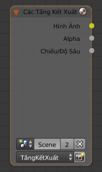

Вузол «Шари Зображу» -- Render Layers Node¶

Вузол «Шари Зображу» -- Render Layers Node.
Даний вузол є відправним місцем для отримання картинки вашої сцени у карті вузлів компонування.
Уводи -- Inputs¶
Цей вузол немає жодних увідних роз'ємів.
Властивості¶
- Сцена -- Scene
Select the scene within your blend-file. The scene information taken is the raw footage (pre-compositing and pre-sequencing).
Gợi ý
To use composited footage from another scene, it has to be rendered into a multi-layer frameset (e.g.
OpenEXR) as an intermediate file store and then imported with Image input node again.- Шар Зображу -- Render layer
- Список доступних Шарів Зображу -- Render Layers. Кнопка зображування, рендерингу -- найкоротший шлях повторного зображування, рендерингу активної сцени.
Виводи -- Outputs¶
- Зображення -- Image
- Відзображене, рендерене зображення.
- Альфа -- Alpha
- Канал альфа-прозорості.
Роз'єми проходів зображу
Доступні роз'єми залежать від увімкнення відповідних проходів зображу. Дивіться проходи зображу Cycles або проходи зображу Blender internal.
- Z
- Стандартно прохід Z-глибини увімкнено.